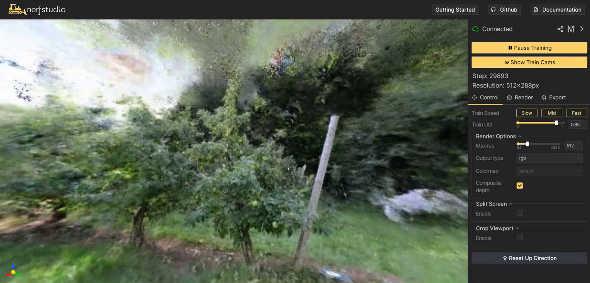
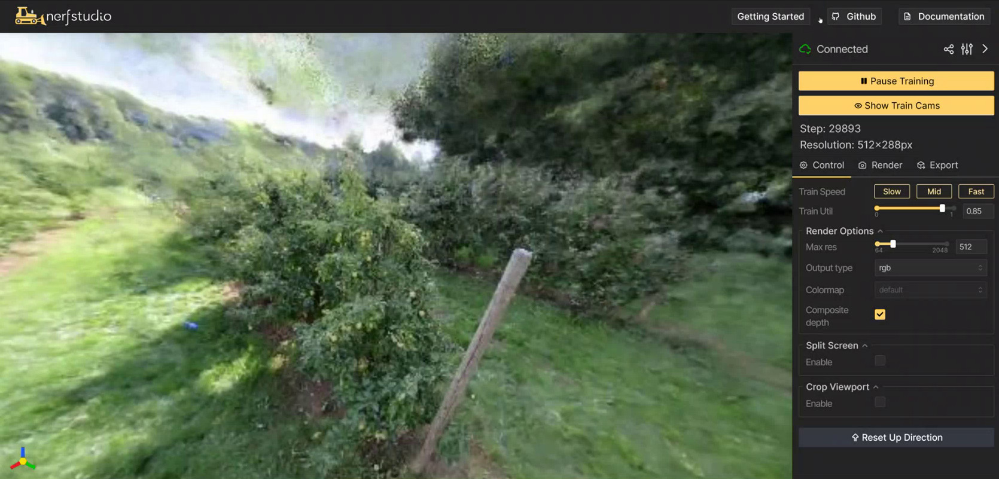

Nerfstudio - Neural Reconstruction
Nerfstudio is a tool for training and visualizing Neural Radiance Fields (NeRF) models for 3D volumetric reconstruction from a collection of images taken of a scene or environment. It's designed to be easy to use and starts generating imagery at the outset, which becomes further refined as training progresses. Neural reconstruction is being applied to edge devices and robotics like with FruitNeRF . This tutorial will guide you through the process of training high-quality NeRF models using nerfstudio on Jetson.

Special thanks to Johnny Núñez Cano for porting the NeRF stack to Jetson!
See NeRF in 2023: Theory and Practice by It-Jim for useful background info.
What you need
-
One of the following Jetson devices:
Jetson AGX Orin (64GB) Jetson AGX Orin (32GB) Jetson Orin NX (16GB)
-
Running one of the following versions of JetPack :
JetPack 6 (L4T r36.x)
-
Sufficient storage space (preferably with NVMe SSD).
-
17.6GBfornerfstudiocontainer image -
Space for models and datasets (
>5GB)
-
-
Clone and setup
jetson-containers:git clone https://github.com/dusty-nv/jetson-containers bash jetson-containers/install.sh
Start Container
Use this command to automatically run, build, or pull a compatible container image for nerfstudio:
jetson-containers run $(autotag nerfstudio)
-v
or
--volume
flags:
jetson-containers run -v /path/on/host:/path/in/container $(autotag nerfstudio)
Later a webserver will be reachable at
http://localhost:7007
. The official docs include
command-line usage
and models
[↗]
Training Your First Model
It's recommended to train a test scene first by following these steps from the getting started tutorial:
# Download some test data
ns-download-data nerfstudio --capture-name=poster
# Train model
ns-train nerfacto --data /data/nerfstudio/models
After it loads, you can navigate your browser to
http://localhost:7007
(or substitute your Jetson's IP address)
The 3D visualizations will begin rendering after the first training step, and progressively become more refined. This process typically takes an hour on Jetson AGX Orin to complete the default setting of 30,000 training steps. The model checkpoints are saved under the mounted
jetson-containers/data/nerfstudio
directory, and generate the same output quality as before.
FruitNeRF
The creators behind FruitNeRF fused NeRFs with segmentation for more accurate counting of fruits in 3D. By training a semantic neural radiance field on both RGB and segmentation labels from SAM , the model is robust to occlusions, double-counting, and mistaken or undesirable fruits.
Extended sampling of the volumetric grid can then blob objects for pose estimation, occupancy mapping, and navigation. Such approaches are promising for combining the strengths of NeRFs for 3D reconstruction, segmentation VITs for open-vocabulary classification, and Jetson's onboard compute for high-definition environmental scanning and perception while in the field.
Data Preparation
We'll use the FruitNeRF datasets as an example of training NeRFs on custom data with nerfstudio. To train a NeRF model on a different scene, you first need to capture a set of images and corresponding camera poses (which can be estimated with the included photogrammetry and image registration tools like COLMAP and OpenSFM as shown here )
The images should be taken from different viewpoints of the scene you want to model, structured in the nerfstudio dataset format . For FruitNeRF, you can just download and extract pre-recorded real or synthetic data from here :
cd /data/nerfstudio
wget https://zenodo.org/records/10869455/files/FruitNeRF_Real.zip
unzip FruitNeRF_Real.zip
mv FruitNeRF_Dataset/tree_01/semantics_sam FruitNeRF_Dataset/tree_01/semantics
cd /data/nerfstudio
wget https://zenodo.org/records/10869455/files/FruitNeRF_Synthetic.zip
unzip FruitNeRF_Synthetic.zip
mv FruitNeRF_Dataset/tree_01/semantics_sam FruitNeRF_Dataset/tree_01/semantics
Training a FruitNeRF Model
This command will generate a NeRF on the first tree (there are multiple trees to try from each dataset). You can find the complete usage information and models on the official GitHub repo:
github.com/meyerls/FruitNeRF
ns-train nerfacto \
--data /data/nerfstudio/FruitNeRF_Dataset/tree_01 \
--output-dir /data/nerfstudio/models \
--pipeline.datamanager.camera-res-scale-factor 0.5
The memory usage depends on the number of images in the dataset and their resolution, so if you're running low on memory try adjusting the scaling factors and image sampling parameters. The simulated data has a lower resolution and can run at full size.
